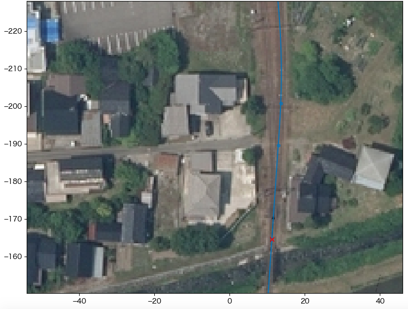
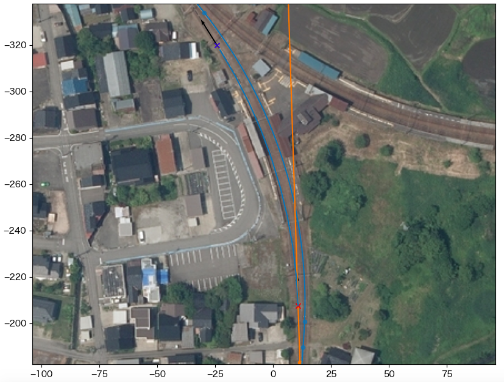
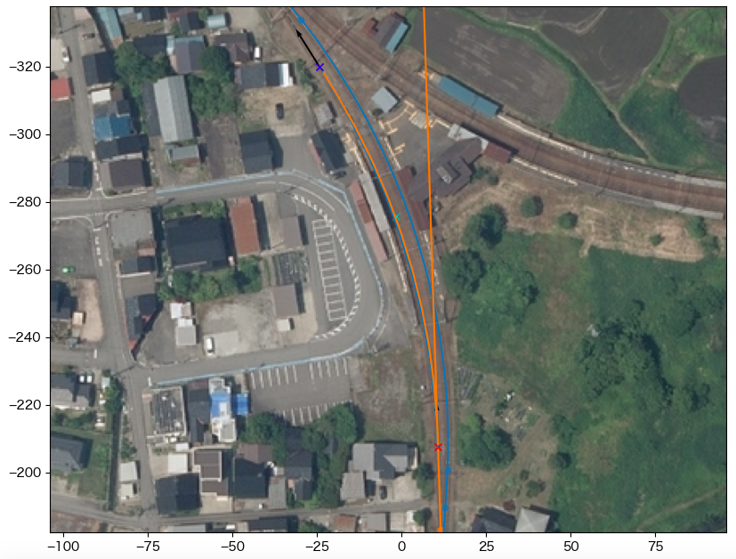
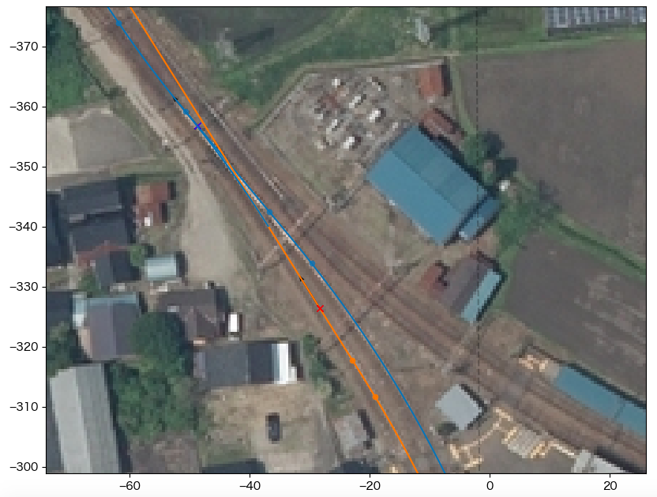

3. tateyama_down の構築¶
3.1. 始点を決める¶
tateyama_down軌道の始点座標を求め、main.cfgに[tateyama_down]セクションを追加する。
カーソルAのtrackをtateyama_upにセットする
カーソルAを立山寄り分岐器の始端にセットし、その地点の距離程を読む
ここでは165m
- 
下記の内容でmain.cfgに[tateyama_down]セクションを追加する
tateyama_down軌道の始点と向きは、tateyama_up軌道の距離程165m地点での値と同一に設定される
- main.cfg¶
... [tateyama_down] file = tateyama_down.txt absolute_coordinate = False parent_track = tateyama_up origin_kilopost = 165 x = 0 y = 0 z = 0 angle = 0 endpoint = 1500
main.cfgと同じディレクトリに以下の内容でtateyama_down.txtを作成する
- tateyama_down.txt¶
BveTs Map 2.02:utf-8 0; Curve.SetGauge(1.067); Curve.SetFunction(0);
{kind=link}
3.2. 立山寄り分岐器¶
カーソルAのtrackをtateyama_downにセットする
カーソルAの位置、方向を距離程0mにセットする
CurveTrack Solverを以下の設定にしてDo Itする
CCL: 18.53
R: -185.5
α: A, β: B (要変更)
Assign results to cursor にチェック
mapsyntax にチェック
Mode: 4. α(fix), R(fix), CCL(fix)
ターミナルへの出力をtateyama_down.txtにコピーする
- tateyama_down.txt¶
... $pt_a = 0; $pt_a +0.000000; $cant = 0; Curve.SetFunction(1); Curve.Interpolate(0.000000,0); $pt_a +0.000000; Curve.Interpolate(-185.000000, $cant); $pt_a +18.530000; Curve.Interpolate(-185.000000, $cant); $pt_a +18.530000; Curve.Interpolate(0.000000,0);
データをリロードする
{kind=link}
3.3. プラットホーム部¶
カーソルAのtrackをtateyama_downにセットする
カーソルAの位置・方向をプラットホームにかかる曲線の始点にセットする
カーソルBのtrackを @absoluteにセットする
カーソルBの位置・方向をプラットホームにかかる曲線の終点にセットする
CurveTrack Solverを以下の設定にしてDo Itする
α: A, β: B
mapsyntax にチェック
Mode: 1. α(fix)->β(free), R(free)
結果
ややホームに寄り過ぎているので、緩和曲線を追加する
- 
カーソルCのtrackを @absoluteにセットする
カーソルCの位置をプラットホーム中央部の軌道中心にセットする
CurveTrack Solverを以下の設定にしてDo Itする
γ: C
mapsyntax にチェック
Mode: 6. α(fix)->β(free) via γ, R(free)
- 
ターミナルへの出力をtateyama_down.txtにコピーする
{kind=link}
{kind=link}
データをリロードする
カーソル |
x |
y |
dir |
track |
kilopost |
|---|---|---|---|---|---|
A |
10.8 |
-207.6 |
-91.8 |
tateyama_down |
43.0 |
B |
-24.3 |
-319.9 |
-122.2 |
@absolute |
/ |
C |
-1.6 |
-275.7 |
/ |
@absolute |
/ |
3.4. 富山寄り分岐器¶
カーソルAのtrackをtateyama_downにセットする
カーソルAの位置・方向を分岐器の手前にセットする
カーソルBのtrackをtateyama_upにセットする
カーソルBの位置・方向を分岐器の終端にセットする
CurveTrack Solverに以下のパラメータをセットしてDo Itする
CCL: 18.53
R: -185.5
α: A, β: B
mapsyntax にチェック
Mode: 3. α(free)->β(free), R(fix)
- 
ターミナルへの出力をtateyama_down.txtにコピーする
- tateyama_down.txt¶
... $pt_a = 170.000000; $pt_a +16.075524; $cant = 0; Curve.SetFunction(1); Curve.Interpolate(0.000000,0); $pt_a +16.075524; Curve.Interpolate(-185.000000, $cant); $pt_a +41.078782; Curve.Interpolate(-185.000000, $cant); $pt_a +41.078782; Curve.Interpolate(0.000000,0);
データをリロードする
{kind=link}
カーソル |
x |
y |
dir |
track |
kilopost |
|---|---|---|---|---|---|
A |
-28.4 |
-326.5 |
-122.2 |
tateyama_down |
170.0 |
B |
-48.8 |
-356.8 |
-129.9 |
tateyama_up |
374.0 |
3.5. 側線の終点を設定¶
main.cfgを修正して、tateyama_down軌道が側線車止めの位置で終点となるようにする。
カーソルAのtrackをtateyama_downにセットする
カーソルAの位置を側線車止めにセットする
カーソルAが示す距離程を確認する
ここでは293.0m
main.cfgを以下のように修正する
- main.cfg¶
... [tateyama_down] file = tateyama_down.txt absolute_coordinate = False parent_track = tateyama_up origin_kilopost = 165 x = 0 y = 0 z = 0 angle = 0 endpoint = 293
データをリロードして完成
{kind=link}
Note
ここで定めた軌道終端は、tsutsuji上でこの先ではtateyama_down軌道の座標計算を行わないことを示しているに過ぎない。 Bve Trainsimマップデータに仕上げる際は、割り当てているrepeaterオブジェクト等を相当する地点で別途終了させる必要がある。